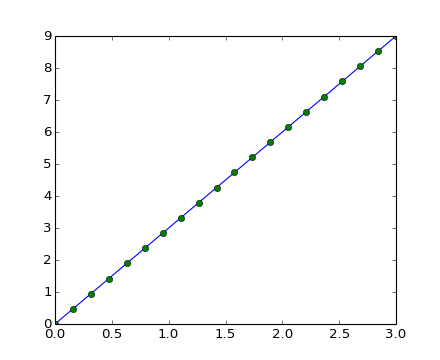
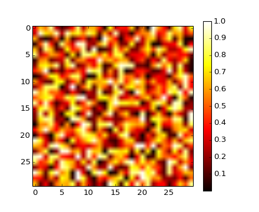
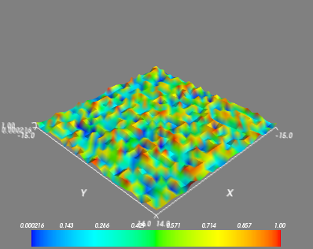
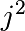

Contenido de la sección
| Objetos Python: |
|---|
| Numpy dispone lo siguiente: | |
|---|---|
>>> import numpy as np
>>> a = np.array([0, 1, 2, 3])
>>> a
array([0, 1, 2, 3])
Truco
Por ejemplo: Una arreglo contiene:
Por qué es útil: Los contenedores eficientes en memoria, proporcionan operaciones numéricas rápidas.
In [1]: L = range(1000)
In [2]: %timeit [i**2 for i in L]
1000 loops, best of 3: 73.8 us per loop
In [3]: a = np.arange(1000)
In [4]: %timeit a**2
100000 loops, best of 3: 3.59 us per loop
En línea: http://docs.scipy.org/
Ayuda interactiva:
In [5]: np.array?
Type: builtin_function_or_method
String Form:<built-in function array>
Docstring:
array(object, dtype=None, copy=True, order=None, subok=False, ndmin=0)
...
Truco
>>> help(np.array)
Help on built-in function array in module numpy.core.multiarray:
array(...)
array(object, dtype=None, copy=True, order=None, subok=False, ndmin=0)
...
Por búsqueda:
>>> np.lookfor('create array')
Search results for 'create array'
---------------------------------
numpy.array
Create an array.
numpy.memmap
Create a memory-map to an array stored in a *binary* file on disk.
...
In [6]: np.con*?
np.concatenate
np.conj
np.conjugate
np.convolve
La convención general para importar numpy es:
>>> import numpy as np
El uso de este tipo de importación es recomendada.
1-D
>>> a = np.array([0, 1, 2, 3])
>>> a
array([0, 1, 2, 3])
>>> a.ndim
1
>>> a.shape
(4,)
>>> len(a)
4
2-D, 3-D, ...
>>> b = np.array([[0, 1, 2], [3, 4, 5]]) # arreglo 2 x 3
>>> b
array([[0, 1, 2],
[3, 4, 5]])
>>> b.ndim
2
>>> b.shape
(2, 3)
>>> len(b) # devuelve el tamaño de la primera dimension
2
>>> c = np.array([[[1], [2]], [[3], [4]]])
>>> c
array([[[1],
[2]],
[[3],
[4]]])
>>> c.shape
(2, 2, 1)
Ejercicio: Arreglos simples
En la práctica, rara vez introducimos los items uno por uno ...
>>> import numpy as np >>> a = np.arange(10) # 0 ... n-1 (!) >>> a array([0, 1, 2, 3, 4, 5, 6, 7, 8, 9]) >>> b = np.arange(1, 9, 2) # inicio, final (excluido), paso >>> b array([1, 3, 5, 7])
>>> c = np.linspace(0, 1, 6) # inicio, final, número de puntos >>> c array([ 0. , 0.2, 0.4, 0.6, 0.8, 1. ]) >>> d = np.linspace(0, 1, 5, endpoint=False) >>> d array([ 0. , 0.2, 0.4, 0.6, 0.8])
>>> a = np.ones((3, 3)) # recuerde: (3, 3) es una tupla >>> a array([[ 1., 1., 1.], [ 1., 1., 1.], [ 1., 1., 1.]]) >>> b = np.zeros((2, 2)) >>> b array([[ 0., 0.], [ 0., 0.]]) >>> c = np.eye(3) >>> c array([[ 1., 0., 0.], [ 0., 1., 0.], [ 0., 0., 1.]]) >>> d = np.diag(np.array([1, 2, 3, 4])) >>> d array([[1, 0, 0, 0], [0, 2, 0, 0], [0, 0, 3, 0], [0, 0, 0, 4]])
>>> a = np.random.rand(4) # uniformes in [0, 1] >>> a array([ 0.95799151, 0.14222247, 0.08777354, 0.51887998]) >>> b = np.random.randn(4) # Gaussianos >>> b array([ 0.37544699, -0.11425369, -0.47616538, 1.79664113]) >>> np.random.seed(1234) # Establece la semilla aleatoria
Ejercicio: Creación de arreglos
Crear los siguientes arreglos (con los tipos de datos correctos)
[[1, 1, 1, 1],
[1, 1, 1, 1],
[1, 1, 1, 2],
[1, 6, 1, 1]]
[[0., 0., 0., 0., 0.],
[2., 0., 0., 0., 0.],
[0., 3., 0., 0., 0.],
[0., 0., 4., 0., 0.],
[0., 0., 0., 5., 0.],
[0., 0., 0., 0., 6.]]
Para el curso: 3 casos de cada uno
Sugerencia: A los elementos de un arreglo se acceden de igual forma que una lista, por ejemplo a[1] or a[1, 2].
Sugerencia: Examine el docstring para diag.
Ejercicio: Crear arreglos en mosaicos
Repasa la documentación de np.tile, y utiliza esta función para construir la matriz
[[4, 3, 4, 3, 4, 3],
[2, 1, 2, 1, 2, 1],
[4, 3, 4, 3, 4, 3],
[2, 1, 2, 1, 2, 1]]
Usted puede haber notado que, en algunos casos, los elementos del arreglo se muestran con un punto (por ejemplo, 2. vs 2). Esto se debe a los tipos de datos utilizados
>>> a = np.array([1, 2, 3])
>>> a.dtype
dtype('int64')
>>> b = np.array([1., 2., 3.])
>>> b.dtype
dtype('float64')
Truco
Diferentes tipos de datos no permiten almacenar datos de forma más compacta en memoria, la mayoría de las veces simplemente trabaje con números de punto flotante. Tenga en cuenta que, en el ejemplo anterior, NumPy detecta automáticamente el tipo de datos a partir de la entrada.
Puede especificar explícitamente qué tipo de datos desea
>>> c = np.array([1, 2, 3], dtype=float)
>>> c.dtype
dtype('float64')
El tipo de dato por defecto es de punto flotante
Truco
>>> a = np.ones((3, 3))
>>> a.dtype
dtype('float64')
También hay otros tipos:
| Complejos: | >>> d = np.array([1+2j, 3+4j, 5+6*1j])
>>> d.dtype
dtype('complex128')
|
|---|---|
| Booleanos: | >>> e = np.array([True, False, False, True])
>>> e.dtype
dtype('bool')
|
| Cadenas: | >>> f = np.array(['Bonjour', 'Hello', 'Hallo',])
>>> f.dtype # <--- las cadenas en f contienen máximo 7 letras
dtype('S7')
|
| Muchos más: | int32/int64... |
Truco
Ahora que tenemos nuestros primeros arreglos de datos, vamos a visualizarlos.
Inicie IPython en modo pylab
$ ipython --pylab
Matplotlib es un paquete de trazado 2D y 3D. Podemos importar sus funciones de la siguiente manera
>>> import matplotlib.pyplot as plt # en forma ordenada
Arreglos 1D
>>> x = np.linspace(0, 3, 20)
>>> y = np.linspace(0, 9, 20)
>>> plt.plot(x, y) # gráfica con línea continua
[<matplotlib.lines.Line2D object at ...>]
>>> plt.plot(x, y, 'o') # gráfica con línea punteada
[<matplotlib.lines.Line2D object at ...>]
>>> plt.show() # <-- mostrar la gráfica (en Ipython no es necesario)
[source code, hires.png, pdf]
Arreglos 2D (como las imágenes)
>>> image = np.random.rand(30, 30)
>>> plt.imshow(image, cmap=plt.cm.hot)
<matplotlib.image.AxesImage at 0xb763f0c>
>>> plt.colorbar()
<matplotlib.colorbar.Colorbar instance at 0xb7e538c>
>>> plt.show()
[source code, hires.png, pdf]
Ver también
Más en Capítulo Matplotlib
Trazado 3D
Para la visualización 3D, podemos utilizar otro paquete: Mayavi. Un ejemplo rápido: iniciar IPython con estas opciones: ipython -pylab=wx (o ipython -pylab -wthread en IPython < 0.10).
In [58]: from mayavi import mlab
In [61]: mlab.surf(image)
Out[61]: <enthought.mayavi.modules.surface.Surface object at ...>
In [62]: mlab.axes()
Out[62]: <enthought.mayavi.modules.axes.Axes object at ...>
Truco
La ventana Mayavi/mlab que se abre es interactiva: haga clic en el botón izquierdo del ratón para rotar la imagen, hacer zoom con la rueda del ratón, etc.
Para más información sobre Mayavi : http://github.enthought.com/mayavi/mayavi
Ver también
Más en Capítulo Mayavi
Los elementos de un arreglo se puede acceder y asignar de la misma forma que otras secuencias de Python (por ejemplo, listas)
>>> a = np.arange(10)
>>> a
array([0, 1, 2, 3, 4, 5, 6, 7, 8, 9])
>>> a[0], a[2], a[-1]
(0, 2, 9)
Advertencia
Los indices comienzan en 0, al igual que otras secuencias de Python (y C/C++). En contraste, en Fortran o Matlab, los índices comienzan en 1.
En arreglos multidimensionales, los índices son tuplas de números enteros
>>> a = np.diag(np.arange(3))
>>> a
array([[0, 0, 0],
[0, 1, 0],
[0, 0, 2]])
>>> a[1, 1]
1
>>> a[2, 1] = 10 # tercera fila, segunda columna
>>> a
array([[ 0, 0, 0],
[ 0, 1, 0],
[ 0, 10, 2]])
>>> a[1]
array([0, 1, 0]) # segunda fila
Note que:
Segmentado de arreglos, al igual que otras secuencias de Python también pueden ser segmentadas
>>> a = np.arange(10)
>>> a
array([0, 1, 2, 3, 4, 5, 6, 7, 8, 9])
>>> a[2:9:3] # [inicio:final:paso]
array([2, 5, 8])
Tenga en cuenta que el último índice no es incluido!
>>> a[:4]
array([0, 1, 2, 3])
Los tres argumentos de segmentado no son necesarios: por defecto, inicio es 0, final es el último y paso es 1
>>> a[1:3]
array([1, 2])
>>> a[::2]
array([0, 2, 4, 6, 8])
>>> a[3:]
array([3, 4, 5, 6, 7, 8, 9])
Un pequeño resumen ilustrado de indexado y segmentado en Numpy ...

Una operación de segmentado crea una vista del arreglo original, que es sólo una forma de acceder a los datos de un arreglo. Por lo tanto el arreglo original no es copiado en memoria.
Al modificar una vista, la matriz original es modificado
>>> a = np.arange(10)
>>> a
array([0, 1, 2, 3, 4, 5, 6, 7, 8, 9])
>>> b = a[::2]
array([0, 2, 4, 6, 8])
>>> b
array([0, 2, 4, 6, 8])
>>> b[0] = 12
>>> b
array([12, 2, 4, 6, 8])
>>> a # (!)
array([12, 1, 2, 3, 4, 5, 6, 7, 8, 9])
>>> a = np.arange(10)
>>> b = a[::2].copy() # creando una copia
>>> b[0] = 12
>>> a
array([0, 1, 2, 3, 4, 5, 6, 7, 8, 9])
Este comportamiento puede resultar sorprendente a primera vista ... pues permite ahorrar memoria y tiempo.
Advertencia
La transpuesta es una vista
Como resultado, una matriz no puede simétrica sobre la marcha
>>> a = np.ones((100, 100))
>>> a += a.T
>>> a
array([[ 2., 2., 2., ..., 2., 2., 2.],
[ 2., 2., 2., ..., 2., 2., 2.],
[ 2., 2., 2., ..., 2., 2., 2.],
...,
[ 3., 3., 3., ..., 2., 2., 2.],
[ 3., 3., 3., ..., 2., 2., 2.],
[ 3., 3., 3., ..., 2., 2., 2.]])
Ejemplo práctico: Criba de números primos

Calcular los números primos en 0–99, con una criba
>>> es_primo = np.ones((100), dtype=bool)
>>> es_primo[:2] = 0 # 0 es False, 1 es True
>>> numero_maximo = int(np.sqrt(len(es_primo)))
>>> for j in range(2, numero_maximo):
... es_primo[2*j::j] = False
Repase help(np.nonzero), e imprima los números primos
Pasos a seguir:
- Descarte los j que ya son conocidos por no ser primos
- El primer número para descartar es 
Truco
Los arreglos numpy pueden indexarse en segmentos, pero también con arreglos booleanos o arreglos enteros (enmascarados). Este método se llama indexado fancy. Crea copias no vistas.
>>> np.random.seed(3)
>>> a = np.random.random_integers(0, 20, 15)
>>> a
array([10, 3, 8, 0, 19, 10, 11, 9, 10, 6, 0, 20, 12, 7, 14])
>>> a % 3 == 0
array([False, True, False, True, False, False, False, True, False,
True, True, False, True, False, False], dtype=bool)
>>> mascara = (a % 3 == 0)
>>> extraer_desde_a = a[mascara] # o tambien, extraer_desde_a = a[a%3==0]
>>> extraer_desde_a # extrae un subarreglo con máscara
array([ 3, 0, 9, 6, 0, 12])
El indexado con máscara puede ser muy útil para asignar un nuevo valor a un subarreglo
>>> a[a % 3 == 0] = -1 # o tambien, a[a%3==0] = -1
>>> a
array([10, -1, 8, -1, 19, 10, 11, -1, 10, -1, -1, 20, -1, 7, 14])
>>> a = np.arange(10)
>>> a
array([0, 1, 2, 3, 4, 5, 6, 7, 8, 9])
El indexado se puede hacer con un arreglo de enteros, donde se repita el mismo índice varias veces
>>> a[[2, 3, 2, 4, 2]] # nota: [2, 3, 2, 4, 2] es una lista Python
array([2, 3, 2, 4, 2])
Nuevos valores pueden ser asignados con este tipo de indexado
>>> a[[9, 7]] = -10
>>> a
array([ 0, 1, 2, 3, 4, 5, 6, -10, 8, -10])
Truco
Cuando una nuevo arreglo es creado a partir de un indexado de un arreglo de enteros, el nuevo arreglo tiene la misma forma que el arreglo de enteros
>>> a = np.arange(10)
>>> indices = np.array([[3, 4], [9, 7]])
>>> a[indices]
array([[3, 4],
[9, 7]])
>>> b = np.arange(10)
La imagen a continuación muestra varias aplicaciones del indexado fancy

Incluso podemos utilizar el indexado fancy y broadcasting al mismo tiempo
>>> a = np.arange(12).reshape(3,4)
>>> a
array([[ 0, 1, 2, 3],
[ 4, 5, 6, 7],
[ 8, 9, 10, 11]])
>>> i = np.array([[0, 1], [1, 2]])
>>> a[i, 2] # lo mismo es a[i, 2*np.ones((2, 2), dtype=int)]
array([[ 2, 6],
[ 6, 10]])

{kind=link}
{kind=link}
{kind=link}